Nacos 致力于帮助您发现、配置和管理微服务。Nacos 提供了一组简单易用的特性集，帮助您快速实现动态服务发现、服务配置、服务元数据及流量管理。
Nacos 帮助您更敏捷和容易地构建、交付和管理微服务平台。 Nacos 是构建以“服务”为中心的现代应用架构 (例如微服务范式、云原生范式) 的服务基础设施。
首先下载nacos：https://github.com/alibaba/nacos/releases
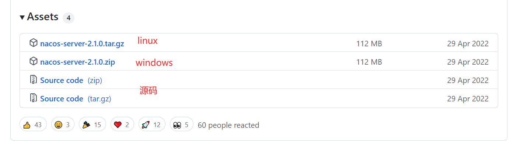
下载的时候注意：1.4.0以下使用的mysql驱动是8.0以下的，1.4.0以上使用的驱动就是8.0以上的了，所以大家在使用的nacos的时候要注意与mysql的对应版本问题，否则会因为nacos与mysql的版本不对应导致的nacos无法加载数据源。
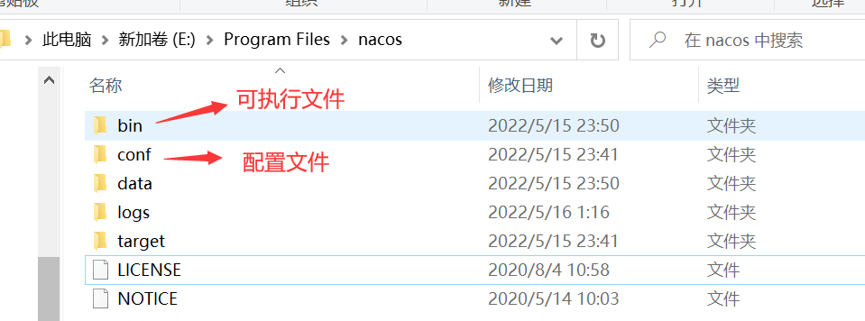
接下来需要配置数据库，进入conf目录，然后使用数据库工具建立nacos数据库，并执行下面的sql脚本
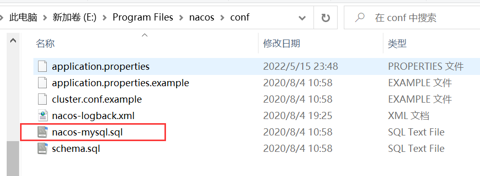
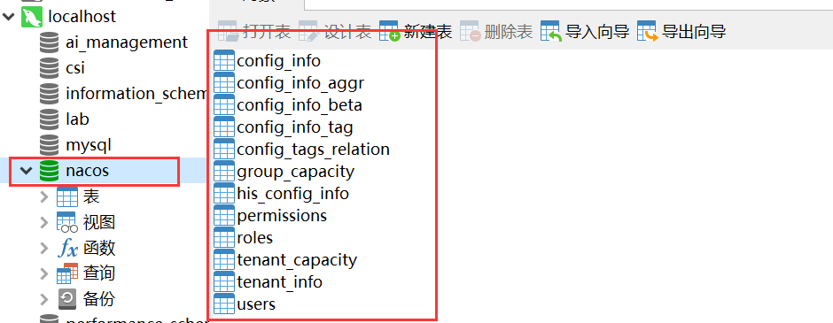
然后修改配置文件application.properties，配置数据库源，使用mysql数据源记得下面这行的注释取消掉
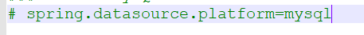
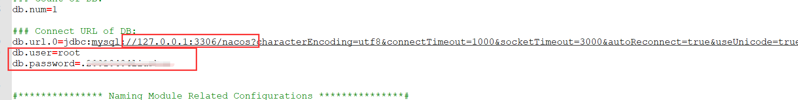
然后修改nacos运行模式，nacos默认使用的集群模式cluster，需要修改为单机模式standalone
Nacos支持三种部署模式，这里是用于自己测试，使用第一种就行
1、单机模式：可用于测试和单机使用，生产环境切忌使用单机模式（满足不了高可用）
2、集群模式：可用于生产环境，确保高可用
3、多集群模式：可用于多数据中心场景
修改bin目录下的startup.cmd，将启动模式设置为standalone，它默认是集群启动
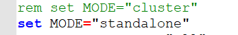
之后就可以启动nacos了，启动nacos需要有java环境，如果没有配置java环境变量，需要先配置好。
双击cmd程序即可直接运行
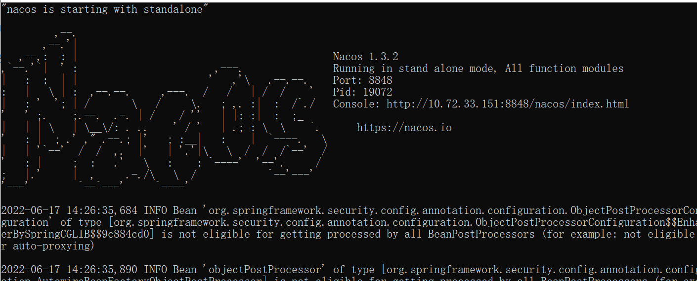
进入图中提示的Console网页，就是nacos的控制台
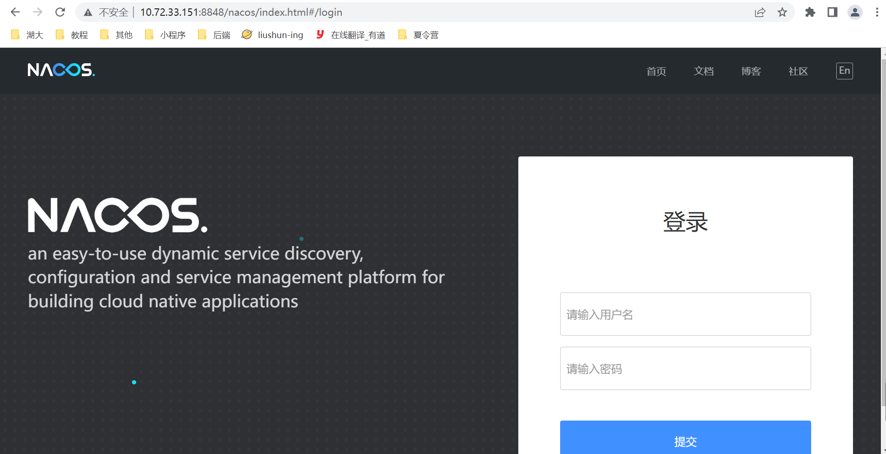
账号密码默认都是nacos
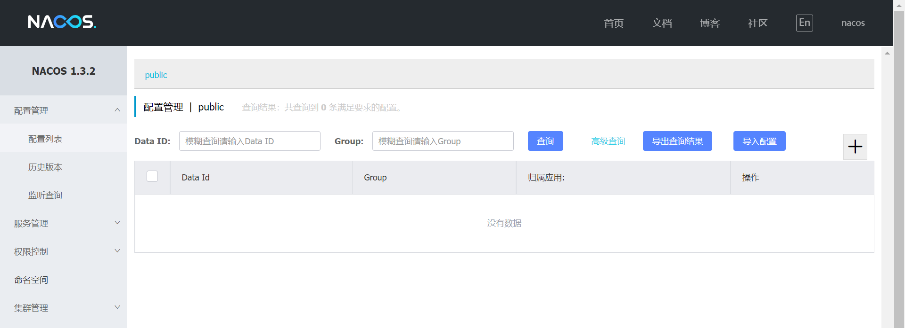
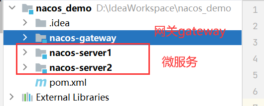
首先搭建最外层项目，这里新建一个maven项目即可。然后把所有文件都删掉，只留下一个pom.xml配置文件即可。
然后创建两个微服务，之这个maven项目下，新建module，选择springboot项目即可。这样就可以是一个父子工程，只需要在父工程里面导入一个公共的依赖，子工程就不需要额外引入了，可以直接继承。
这里需要注意很大的问题，就是springboot和springcloud存在版本适配问题，需要版本对应了，才能启动成功
cloud和boot版本对照表，可以去官网
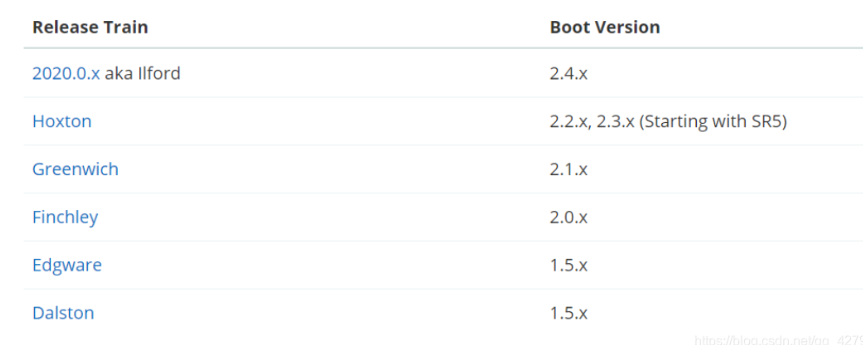
父工程配置pom.xml
xxxxxxxxxx641<groupId>org.example</groupId>2<artifactId>nacos_demo</artifactId>3<version>0.0.1-SNAPSHOT</version>4<!-- 有了这个parent就不需要给子集pom配置版本号了,因为它包括了5 1.定义了java编译版本为1.86 2.使用utf-8格式编码7 3.继承spring-boot-dependencies进行统一版本依赖管理8 4.执行打包 war jar操作配置（可以省略打包plugin的配置）9 5.自动化资源过滤 如application.properties和application.yml的资源过滤 包括profile 多环境配置的10 6.自动化插件配置11 7.不需要配置maven打包plugin插件配置-->12<parent>13 <groupId>org.springframework.boot</groupId>14 <artifactId>spring-boot-starter-parent</artifactId>15 <version>2.1.3.RELEASE</version>16</parent>17
18<!--父工程配置这个文件的打包方法，不然打包的时候，这个配置文件不会打包进去-->19<packaging>pom</packaging>20<!--子项目在这注册-->21<modules>22 <module>nacos-server1</module>23 <module>nacos-server2</module>24 <module>nacos-gateway</module>25</modules>26
27<dependencyManagement>28 <dependencies>29 <!--引入springcloud的版本-->30 <dependency>31 <groupId>org.springframework.cloud</groupId>32 <artifactId>spring-cloud-dependencies</artifactId>33 <version>Greenwich.SR3</version>34 <type>pom</type>35 <scope>import</scope>36 </dependency>37
38 <dependency>39 <groupId>com.alibaba.cloud</groupId>40 <artifactId>spring-cloud-alibaba-dependencies</artifactId>41 <version>2.1.1.RELEASE</version>42 <type>pom</type>43 <scope>import</scope>44 </dependency>45 </dependencies>46
47</dependencyManagement>48<!--国内依赖镜像仓库，可以方便下载依赖-->49<repositories>50 <repository>51 <id>spring</id>52 <url>https://maven.aliyun.com/repository/spring</url>53 <releases>54 <enabled>true</enabled>55 </releases>56 <snapshots>57 <enabled>true</enabled>58 </snapshots>59 </repository>60</repositories>61<properties>62 <maven.compiler.source>8</maven.compiler.source>63 <maven.compiler.target>8</maven.compiler.target>64</properties>子工程pom.xml
xxxxxxxxxx461<parent>2 <!--配置引用的父工程-->3 <groupId>org.example</groupId>4 <artifactId>nacos_demo</artifactId>5 <version>0.0.1-SNAPSHOT</version>6</parent>7<groupId>com.example</groupId>8<artifactId>nacos-server1</artifactId>9<version>0.0.1-SNAPSHOT</version>10<name>nacos-server1</name>11<!--子工程配置打包方式-->12<packaging>jar</packaging>13<description>nacos-server1</description>14<properties>15 <java.version>1.8</java.version>16</properties>17<dependencies>18 <dependency>19 <groupId>org.springframework.boot</groupId>20 <artifactId>spring-boot-starter</artifactId>21 </dependency>22
23 <dependency>24 <groupId>org.springframework.boot</groupId>25 <artifactId>spring-boot-starter-test</artifactId>26 <scope>test</scope>27 </dependency>28
29 <dependency>30 <groupId>com.alibaba.cloud</groupId>31 <artifactId>spring-cloud-alibaba-nacos-discovery</artifactId>32 </dependency>33
34 <!--提供web服务的子项目导入这个依赖-->35 <dependency>36 <groupId>org.springframework.boot</groupId>37 <artifactId>spring-boot-starter-web</artifactId>38 </dependency>39 <!--gateway子项目则导入gateway的依赖-->40 <!--<dependency>41 <groupId>org.springframework.cloud</groupId>42 <artifactId>spring-cloud-starter-gateway</artifactId>43 </dependency>-->44 45 <!--其余的可以根据需要再自行引入-->46</dependencies>
首先需要再每个子项目的启动类上添加@EnableDiscoveryClient注解，允许nacos服务发现
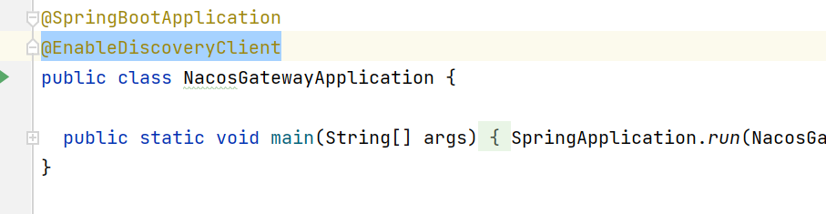
然后配置web服务的项目的application.yml文件
xxxxxxxxxx111server2 port80813spring4 application5 # 微服务的名字6 nameservice17 cloud8 # nacos的注册地址9 nacos10 discovery11 server-addrlocalhost8848
然后配置网关的application.yml文件
xxxxxxxxxx261server2 # 统一的访问入口3 port99994spring5 application6 namenacos-gateway7 cloud8 nacos9 discovery10 server-addrlocalhost884811 gateway12 discovery13 locator14 enabledtrue #开启表示根据微服务名称映射，就是微服务名称拼接到url中可以直接访问，但是不推荐这么使用 容易暴露微服务 默认false，开启后可以通过ip:port/服务名称/接口地址进行服务转发15 enabledtrue #默认开启网关true，关闭网关false16 # 这里就是配置微服务的访问，可以实现负载均衡等功能17 routes18idservice1 #路由的ID，没有固定规则但要求唯一，建议配合服务名19 urihttp//localhost8081 #匹配后提供服务的路由地址20 predicates21Path=/service1/** #断言，路径相匹配的进行路由转发22idservice223 urihttp//localhost808224 predicates25Path=/service2/**26
分别启动这三个项目，即可看到这三个项目都在nacos注册了
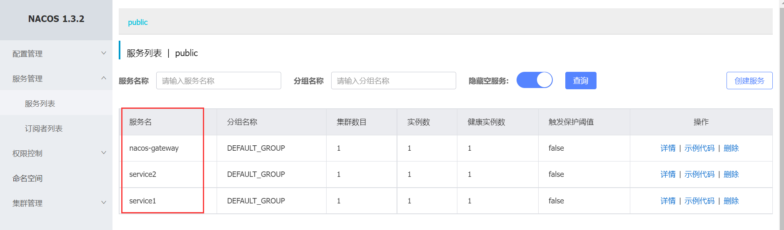
写个简单的例子
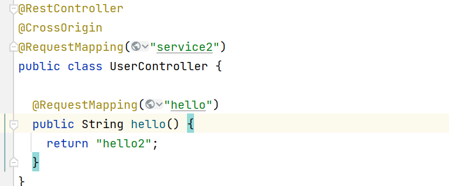
当启动了可以根据服务名匹配时，就可以使用ip:port/服务名称/接口地址进行访问
关闭之后，就不能了，只能通过自己定义的匹配规则进行访问
feign是Springboot cloud体系下的一个重要组件，用于微服务间的调用，底层为httpClient。 feign 暂时不支持GET方式传递bean类封装的多参数对象，feign调用用GET请求传递复杂参数时,底层的urlhttpclient会自动把get方法转为post方法，因此需要针对bean类进行转换，主要有三种方式： 1）将 bean封装的多参数对象拆散成一个一个单独的属性放在方法参数里。（不适用于参数多的案例） 2）使用 GET 传递 @Requestbody（慎用），此方式违反 RESTFul 规范，要求被请求项目参数支持Requestbody，且需要将FeignClient的访问方式替换为apache下的httpclient访问方式。 3）把方法参数变成 Map 传递。 这里使用第三种方法把方法参数变成 Map 传递实现。
哪个服务用到，就操作哪个服务，一下均是操作service服务
添加依赖
xxxxxxxxxx51<!-- feign -->2<dependency>3 <groupId>org.springframework.cloud</groupId>4 <artifactId>spring-cloud-starter-openfeign</artifactId>5</dependency>启动类添加如下注解@EnableFeignClients
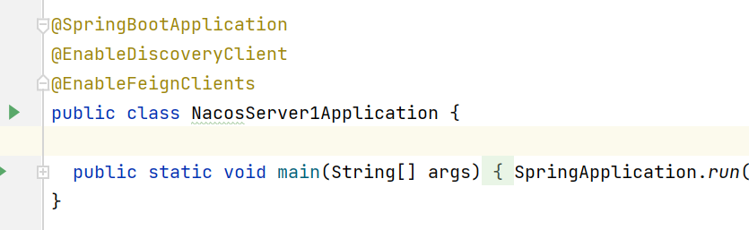
然后编写代理类
xxxxxxxxxx231package com.example.nacosserver1;2
3import org.springframework.cloud.openfeign.FeignClient;4import org.springframework.stereotype.Component;5import org.springframework.web.bind.annotation.RequestMapping;6
7import java.util.Map;8
9(name = "service2",url = "http://localhost:8082")10public interface Server2FeignClient {12
13
14 ("/service2/postInfo")15 String postInfo( Map requestVo); // get请求携带对象，转换为map，加个注解就行16
17 ("/service2/hello")18 String hello();19
20 (value = "/service2/postInfoPost", method = RequestMethod.POST)21 String postInfoPost(User user);22}23
和controller类
xxxxxxxxxx421package com.example.nacosserver1;2
3import com.alibaba.fastjson.JSON;4import org.springframework.beans.factory.annotation.Autowired;5import org.springframework.web.bind.annotation.CrossOrigin;6import org.springframework.web.bind.annotation.RequestMapping;7import org.springframework.web.bind.annotation.RestController;8
9import java.util.Map;10
11("service1")14public class UserController {15
16 // 自动注入接口17 18 private Server2FeignClient server2FeignClient;19
20 ("hello")21 public String hello() {22 return "hello1";23 }24
25 ("hello2")26 public String hello2() {27 // 直接调用接口的函数即可28 return server2FeignClient.hello();29 }30
31 ("postInfo")32 public String postInfo(User user) {33 // 使用fastjson完成对象到map的转换34 return server2FeignClient.postInfo(JSON.parseObject(JSON.toJSONString(user), Map.class));35 }36 37 ("postInfoPost")38 public String postInfoPost(User user) {39 return server2FeignClient.postInfoPost(user);40 }41}42
顺便给出service2的controller
xxxxxxxxxx161("hello")2public String hello() {3 return "hello2";4}5
6("/postInfo")7public String postInfo(User user) {8 System.out.println(user);9 return user.toString();10}11
12("/postInfoPost")13public String postInfoPost( User user) {14 System.out.println(user);15 return user.toString();16}
测试：
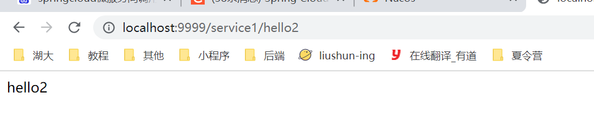
通过service调用service2的hello接口，这是无参数传递情况
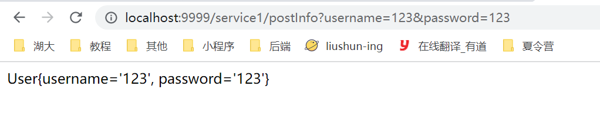
传递一个user对象，get请求，需要转换为map形式，然后feign客户端需要使用@RequestParam参数
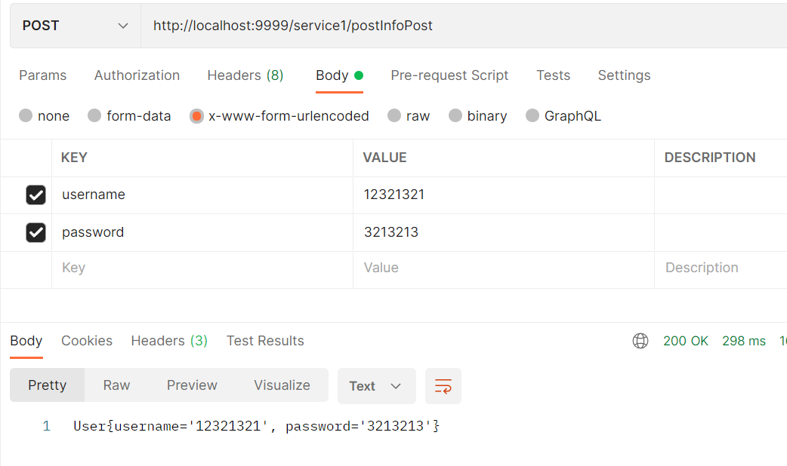
使用post请求携带请求体，可以直接使用user作为feign的参数传递，只不过需要注意的是，feign只支持json形式的请求体，所以在service2中需要使用@RequestBody注解，但是service1里面可以不用，可以使用x-www-form-urlencoded格式的请求体。
有了这些基本的框架，就可以开始学习编写微服务项目。